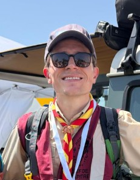
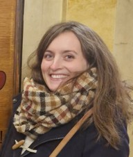
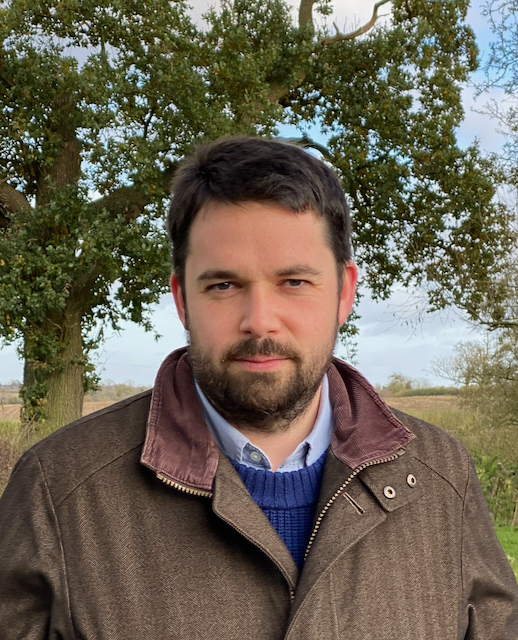
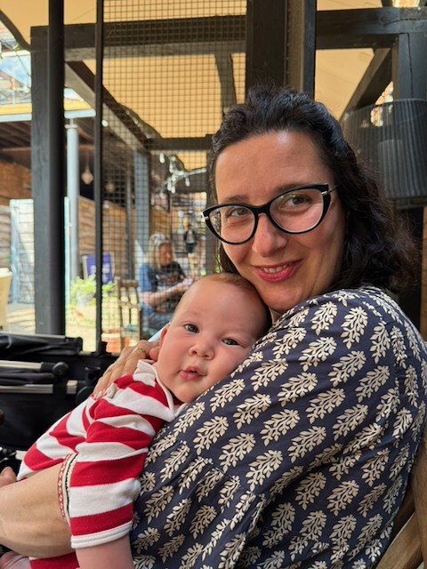

Faith. Culture. Fluency.
Forming fluent Catholics rooted in the cultures of Christendom.
Languages for Catholics grew from a simple observation: most language curricula are either secular and bland, or secular and worse. Catholic families wanting to teach French or Italian faced a choice between sanitised textbook fare and material that actively conflicted with their values.
We set out to offer something better: language education that takes both the language and the faith seriously.
We believe language learning is formation, not just instruction. To learn French or Italian properly is to enter into a culture, a way of seeing the world, a history. For Catholic children, that means encountering the France of the cathedrals, the saints, the great tradition of Catholic thought. It means meeting the Italy of Rome, of Assisi, of Dante's Commedia.
We believe children rise to expectations. We don't dumb down. We teach grammar properly because grammar is how language actually works. We expect effort, attention, and a willingness to be stretched. But we do this with joy—because learning a language well is genuinely thrilling.
We believe this should be joyful. Languages open worlds. We want our students to feel the thrill of understanding, the pleasure of a poem, the satisfaction of a sentence well-constructed. Language is not a chore—it's a gift.


Simon and Isabelle – the founders of Languages for Catholics – are a Catholic couple living in Bedfordshire, England, with their six children, four of whom are bilingual in French and English. (Their two infants have yet to master the passé composé.)
Isabelle is French and a qualified secondary school teacher in Modern Foreign Languages and History. Simon is English, a medical doctor, and has over twenty years' tutoring experience across a range of subjects. They educate their own children in both languages.
Both know what it means to learn a language to fluency—Isabelle learning English, Simon learning French—and are passionate about sharing the joy of that process with others. The family is relocating to Versailles in 2026.


Matthew and Ester are an Anglo-Italian Catholic couple with four young children, based in the UK. United by their faith and shared love for European languages, culture, and 'la dolce vita', they joined the core team in early 2026, helping to expand the Languages for Catholics model into new languages and new homes.
Born in the UK, Matthew is an experienced teacher and educator. He studied French, German and Spanish at GCSE and continued his language learning with both an A-Level and AP in French. Matthew met Ester while studying in Sussex and taught himself Italian to impress her (he's still waiting to see if it worked). He has an academic background in history, theology and philosophy and is also a Scouts of Europe Troop Leader, cook, musician, woodworker, and general polymath.
Ester is Italian and has lived and worked in the UK for the past sixteen years. She leads the development of Italian for Catholics and has five years' experience tutoring adults in Italian. She holds a Master's degree in International Relations from the University of Bologna and spent two years living and working in Spain — she's fluent in Spanish as well as English and Italian. Ester is a keen gardener, cook, artist, and crafter, and loves nothing more than sitting in a piazza with a glass of wine, chatting with friends.
Mike and Maria live in the UK with their two young daughters. They are practising Catholics actively involved in their church community. Maria is from Colombia, which is where they met when Mike was teaching music in Bogotá. They speak Spanish and English at home.
Mike has been immersed in languages and music since early childhood. He grew up bilingually with German, learned French for over a decade and taught himself Spanish when studying the violin in Cologne. He has been teaching for nearly 20 years. He plays the organ at Mass, and in his free time he likes tinkering in the garage.
Maria worked in graphic design for five years in Colombia and holds a Master's degree in Marketing from Universidad de Los Andes. Since moving to the UK, she has worked at Regina Caeli Academy in Bedfordshire while continuing her freelance design work. She now enjoys travelling with her family and homeschooling. She draws inspiration from her experiences in the Salesian Scouts and Catholic youth movements, which gave her a deep appreciation for Catholic culture, history, and community.